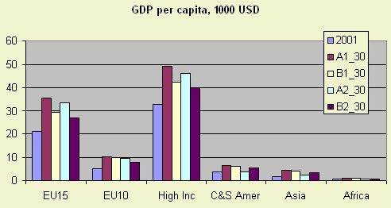

Income is an important driver which can be expressed as Gross Domestic Production (GDP). Growth of income affects the future of rural areas directly and indirectly in a variety of ways. Some examples will be presented. Especially in the poorer countries the demand for food and the nature of the demand (shift to more expensive products such as fruit and livestock products) will influence agricultural production in the region and the import of products and commodities. When GDP is higher a faster pace of technological development is assumed. Also it is assumed that a higher GDP leads to an increasing demand for space needed for housing, infrastructure and recreation and hence urbanisation.
GDP is assumed to grow in all scenarios for all continents. GDP growth per capita is a measure of income increase. Between the scenarios there are significant differences in the rate of growth. In general the Global Economy scenario shows the highest growth rates. Asia shows the highest growth rates of the groups of countries.
The income growth rate in EU10 countries is higher than in EU15 countries in all scenarios, especially in the Global Cooperation scenario.

Figure 1 - GDP yearly growth rates per scenario for different world regions.
The process of transition is likely to continue in the accession countries (EU12). Income growth is high (2-3 times that of the EU15). The level of income is less than 50% of that of the EU15 and there is ongoing structural change in their economies and especially in agriculture. Economic growth accelerated in the EU12 after accession. Structural change will be supported by structural funds and rural development. The EU15 economies are more stable and will grow slowly.

Figure 2 - GDP per capita for groups of countries per scenario
Despite higher income growth rates in developing and transition countries, the large income difference with developed countries (EU and High Income) will not disappear in the near future.